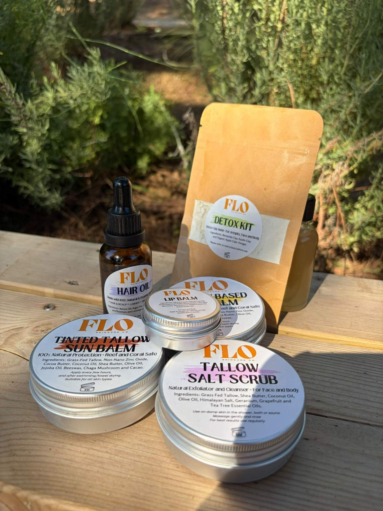

Salt on the skin.
Heat held in the sand.
Light, slowly turning gold.

It started at home
FLO began with a baby whose skin was struggling. When prescribed treatments didn't help, our founder moved her son to gentler, natural products, and found how hard they were to find, and how expensive, sun cream most of all.
So she started making her own. Friends asked for a tin, then family, and in 2024 FLO officially launched, with one aim: natural skincare that is effective, affordable and honest.